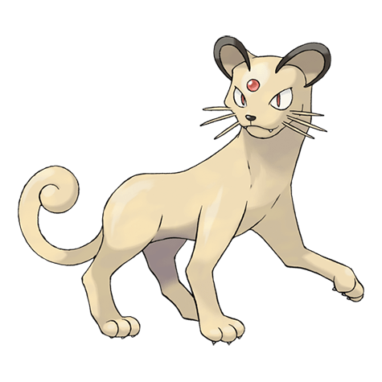
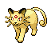

Назад
Персиана

Персиана — Покемон 1 поколения под номером 53 в Покедекс. Обитает он в регионе Kanto и относится к Нормальному типу. Это последняя стадия эволюции Покемона Мяута. У Персиана растут шесть крепких усов, которые придают ему храбрости. Усы чувствуют движение воздуха, благодаря чему он определяет, что находится в непосредственной близости. Он становится послушным, если его схватить за усы.
Тип:
Нормальный
Эволюция

# 053 Персиана